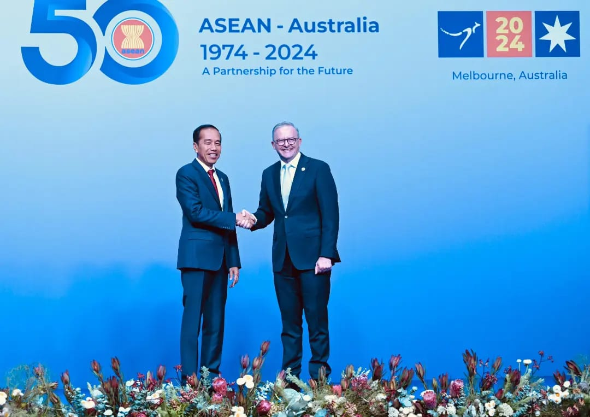

Presiden Indonesia di french open 2024 hari ini, rabu 6 maret
CNN IndonesiaSenin, 30 Okt 2023
Jakarta, CNN Indonesia -- Presiden Republik Indonesia Joko Widodo (Jokowi) memberikan ucapan selamat kepada Jonatan Christie yang meraih gelar juara French Open 2023.
Jonatan keluar sebagai juara French Open 2023 setelah mengalahkan wakil China Li Shi Feng dalam duel sengit yang berlangsung tiga gim di Glaz Arena, Prancis, Minggu (29/10). Jojo, sapaan akrab Jonatan, sempat kalah 16-21 di gim pertama tetapi bisa merebut dua gim berikutnya dengan skor 21-15, 21-14 untuk keluar sebagai juara. "Jonatan Christie meraih gelar juara tunggal putra turnamen bulutangkis French Open 2023. Dalam laga final yang seru dan berlangsung tiga gim di Glaz Arena, Rennes, Prancis semalam, Jonatan menundukkan Li Shi Feng dari China," tulis Jokowi di akun Instagram "Pada laga final yang lain, ganda putra Indonesia, Muhammad Shohibul Fikri/Bagas Maulana juga tampil di final dan meraih runner-up. Dari Tanah Air, saya menyampaikan selamat kepada Jonatan Christie dan Muhammad Shohibul Fikri/Bagas Maulana". "Pertama puji syukur, Puji Tuhan karena ini adalah titel pertama saya di level Super 750 yang sudah lama saya nanti-nantikan. Sudah beberapa kali saya masuk final tapi belum mampu juara. Tidak mudah, saya ada sedikit tegang di awal-awal laga. Banyak melakukan kesalahan sendiri," ujar Jonatan usai menjadi juara French Open 2023.Pada hari pertama penyelenggaraan French Open 2024, Selasa (5/3), hanya ada lima wakil Indonesia yang berlaga. Sementara hari ini akan ada tujuh wakil yang bakal berupaya meraih tiket ke babak kedua atau babak 16 besar.Sederet atlet-atlet ganda putra bakal turun bertanding. Menurut jadwal yang sudah disusun, Mohammad Ahsan/Hendra Setiawan akan menjadi ganda putra pertama Indonesia yang akan tampil. Ahsan/Hendra bakal bertemu wakil tuan rumah Lucas Corvee/Ronan Labar.